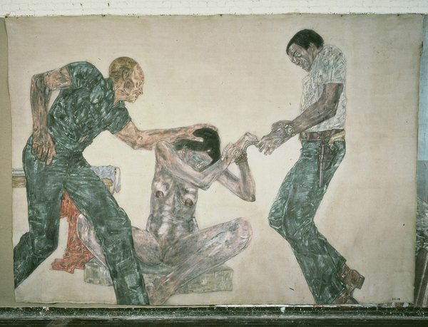

CRVI000457Janet Halverson - JFK and LBJ
Cover for Tom Wicker · Pelican
Cover for Tom Wicker · Pelican

CRVI000470Unknown - Miracle Worker
Bloomberg Businessweek
Bloomberg Businessweek

CRVI000472Unknown - Selling Obama
Bloomberg Businessweek
Bloomberg Businessweek

CRVI000756Tetsuya Ishida - Public Property
Kōkyōbutsu · acrylic on canvas · 1999
Kōkyōbutsu · acrylic on canvas · 1999

CRVI000799Joseph Beuys - Ein Vergleich zweier Gesellschaftsformen
Polythene carrier bag with felt · art intermedia Edition · 10,000 copies · 1971
Polythene carrier bag with felt · art intermedia Edition · 10,000 copies · 1971

CRVI000800Joseph Beuys - [Beuys with a rose in a graduated cylinder]
Signed photograph
Signed photograph

CRVI000815Seymour Chwast - E Pluribus Bang!
Viking Press · 1970
Viking Press · 1970

CRVI002461Eric Yahnker - Wrecking Ball
2014
2014

CRVI002462Eric Yahnker - A painter copying a portrait of Colin Kaepernick

CRVI002463Eric Yahnker - Barack Obama placing a medal on Tupac Shakur

CRVI003038Leon Golub - Mercenaries III

CRVI003039Leon Golub - Interrogation III